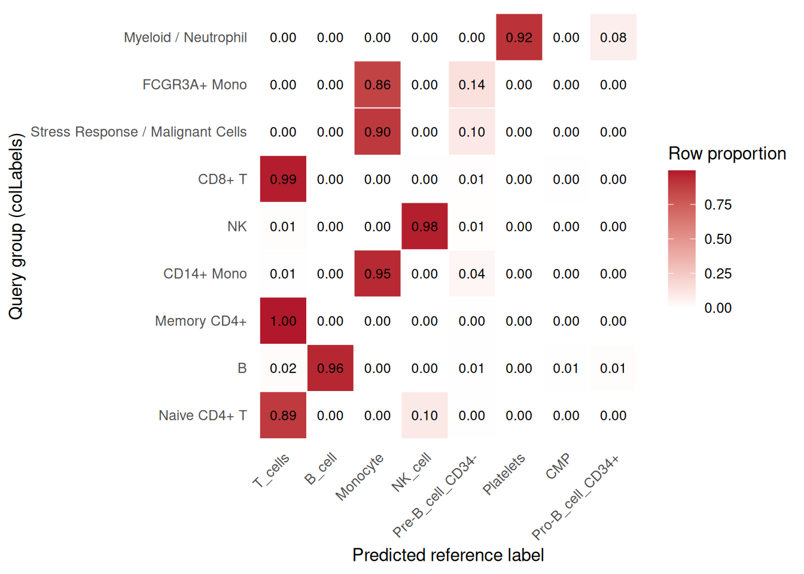
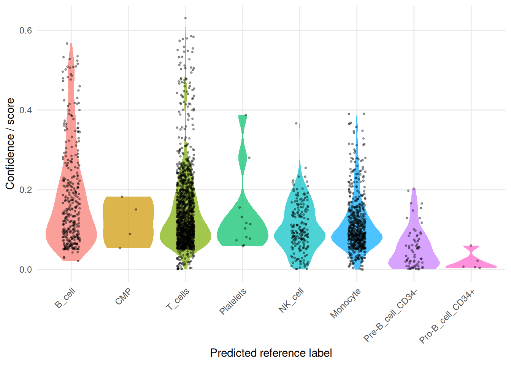

8 Cell Identity and Reference Mapping
This mainline answers the most common post-clustering question: what are these cells, and how confidently can we connect them to a known reference atlas?
sclet keeps manual annotation, lightweight label transfer, and reference-driven mapping in the same narrative. The goal is to let users think in terms of one annotation workflow rather than a choice between disconnected backend names.
8.1 Manual annotation
Please refer to the Cell cluster annotation session.
8.2 Automatic annotation
The low-level SingleR::SingleR() call is still useful for understanding the underlying method. In daily sclet workflows, however, the recommended entry point is RunSingleR() or the semantic wrapper RunReferenceMapping(method = "SingleR"), because these paths record the annotation result and its provenance back into the unified state layer.
At the moment, the practical backend stack is intentionally simple:
SingleRas the main reference annotation / mapping entryKNNas a lightweight baseline mapping backendSymphonyas a harmonized atlas projection backend now fully integrated
In this chapter, both the low-level SingleR() workflow and the sclet analysis examples are executed during book rendering when the required Bioconductor dependencies are available. This keeps the chapter useful as documentation while also exercising the annotation layer in CI.
8.3 Reference mapping mainline workflow
If your real question is “what does this query dataset correspond to in a reference atlas?”, RunReferenceWorkflow() is now the semantic entry point for that mainline. It wraps the reference-mapping step as one reusable analysis unit instead of forcing you to think first about whether the backend is SingleR or KNN.
8.3.1 Lightweight Reference Mapping (KNN)
If you have a reference SingleCellExperiment with cell type annotations, you can use it to map labels to your query dataset quickly:
set.seed(1)
ref_idx <- sample(seq_len(ncol(pbmc)), 500)
ref_sce <- pbmc[, ref_idx]
query_sce <- pbmc[, -ref_idx]
ref_sce$label <- as.character(SingleCellExperiment::colLabels(ref_sce))
query_sce <- RunReferenceMapping(
object = query_sce,
ref = ref_sce,
labels = "label",
method = "KNN",
layer = "logcounts",
k = 5,
name = "knn_demo"
)
# Inspect the recorded reference-mapping state
get_mapping(query_sce)
# Visualize the query and reference in the same projection space
ProjectionPlot(query_sce, ref_sce)8.3.2 Run SingleR with sclet
library(sclet)
hpca <- celldex::HumanPrimaryCellAtlasData()
pbmc2 <- RunReferenceMapping(
pbmc,
ref = hpca,
labels = hpca$label.main,
method = "SingleR",
layer = "logcounts",
name = "hpca_main"
)## using unknown matrix fallback for 'HDF5ArraySeed'## Annotation added to colData columns: 'hpca_main_labels' and 'hpca_main_pruned.labels'## $id
## [1] "hpca_main"
##
## $type
## [1] "annotation"
##
## $status
## [1] "completed"
##
## $method
## [1] "SingleR"
##
## $inputs
## $inputs$assay
## [1] "logcounts"
##
## $inputs$layer
## [1] "logcounts"
##
## $inputs$reference_class
## [1] "SummarizedExperiment"
##
##
## $artifacts
## $artifacts$labels_col
## [1] "hpca_main_labels"
##
## $artifacts$pruned_labels_col
## [1] "hpca_main_pruned.labels"
##
## $artifacts$score_col
## [1] "hpca_main_score"
##
##
## $params
## list()
##
## $summary
## $summary$n_labels
## [1] 8
##
## $summary$n_pruned_labels
## [1] 8
##
## $summary$mean_score
## [1] 0.1371315
##
##
## $created_at
## [1] "2026-07-20 04:06:10 UTC"## $id
## [1] "hpca_main"
##
## $type
## [1] "mapping"
##
## $status
## [1] "completed"
##
## $method
## [1] "SingleR"
##
## $inputs
## $inputs$assay
## [1] "logcounts"
##
## $inputs$layer
## [1] "logcounts"
##
## $inputs$reference_class
## [1] "SummarizedExperiment"
##
## $inputs$mode
## [1] "label_transfer"
##
##
## $artifacts
## $artifacts$labels_col
## [1] "hpca_main_labels"
##
## $artifacts$pruned_labels_col
## [1] "hpca_main_pruned.labels"
##
## $artifacts$score_col
## [1] "hpca_main_score"
##
## $artifacts$mapping_type
## [1] "reference_mapping"
##
##
## $params
## list()
##
## $summary
## $summary$n_labels
## [1] 8
##
## $summary$n_pruned_labels
## [1] 8
##
## $summary$mean_score
## [1] 0.1371315
##
##
## $created_at
## [1] "2026-07-20 04:06:10 UTC"## [1] "Sample" "Barcode"
## [3] "Sequence" "Library"
## [5] "Cell_ranger_version" "Tissue_status"# summarize transferred labels across query groups
plot_reference_label_transfer_heatmap(
pbmc2,
group.by = "colLabels",
id = "hpca_main"
)
8.3.3 Reference mapping workflow
RunReferenceWorkflow() is the higher-level entry point for the same mainline. It is still useful to show in the book, but if the dependency stack gets heavy we can move this example to a separate cache workflow and let the rendered chapter read the saved result instead of recomputing it every time.
pbmc_ref <- RunReferenceWorkflow(
pbmc,
ref = hpca,
labels = hpca$label.main,
method = "SingleR",
layer = "logcounts",
name = "reference_main"
)## using unknown matrix fallback for 'HDF5ArraySeed'## Annotation added to colData columns: 'reference_main_mapping_labels' and 'reference_main_mapping_pruned.labels'plot_reference_label_transfer_heatmap(
pbmc_ref,
group.by = "colLabels",
id = "reference_main_mapping"
)

8.3.4 Symphony Atlas Mapping
Symphony builds a harmonized reference atlas that integrates multiple batches, then projects query cells into the same space for label prediction via k-NN. This is especially useful when the reference includes substantial batch structure that should be modeled during integration.
library(sclet)
# object: your query SingleCellExperiment
# ref: a reference SingleCellExperiment with cell type labels in colData
object <- RunReferenceMapping(
object = object,
ref = ref,
labels = "cell_type",
method = "Symphony",
vars = c("donor"), # batch variables to integrate over
k = 5,
name = "symphony_demo"
)
# Inspect predictions
table(object$symphony_predicted)
head(object$symphony_confidence)
# Inspect the recorded mapping state
get_mapping(object, id = "symphony_demo")Symphony mapping also works through RunReferenceWorkflow():
8.3.5 State-aware SingleR provenance
When you use the low-level SingleR() call directly, you are responsible for deciding which matrix to pass. In contrast, RunReferenceMapping(method = "SingleR") follows the current sclet layer contract and resolves that choice from DefaultLayer(pbmc) unless you override it. If you provide name = "hpca_main", both the annotation record and the mapping record are stored under that id, and the predicted labels are written to run-specific columns such as hpca_main_labels.
If the current layer comes from a corrected integration workflow, both the annotation state and the mapping state record that provenance. In practice, this means get_annotation(pbmc)$inputs$integration and get_mapping(pbmc)$inputs$integration can tell you whether the label transfer was performed on top of a corrected representation rather than the raw normalized layer.
8.3.7 Comparison with manual annotation result
# Ensure manual labels are available in colData for comparison
pbmc$label <- SingleCellExperiment::colLabels(pbmc)
x <- colData(pbmc)[, c("label", "hpca_label", "dice_label")]
plot_list(
manual = sc_dim(pbmc, reduction="UMAP"),
hpca = sc_dim(pbmc, reduction="UMAP", mapping=aes(color=hpca_label)),
dice = sc_dim(pbmc, reduction="UMAP", mapping=aes(color=dice_label)),
ncol = 3) &
sc_dim_geom_label(geom = ggrepel::geom_text_repel) &
theme(legend.position='inside')
table(x[,c(1,2)])
table(x[,c(1,3)])